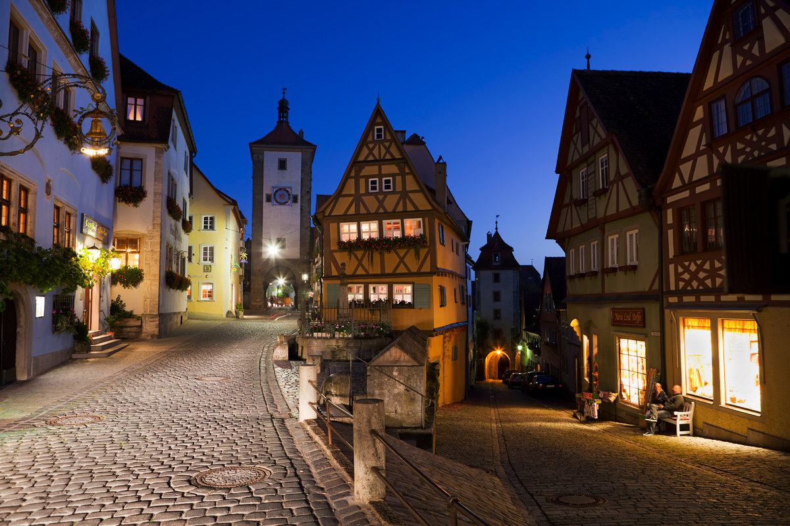
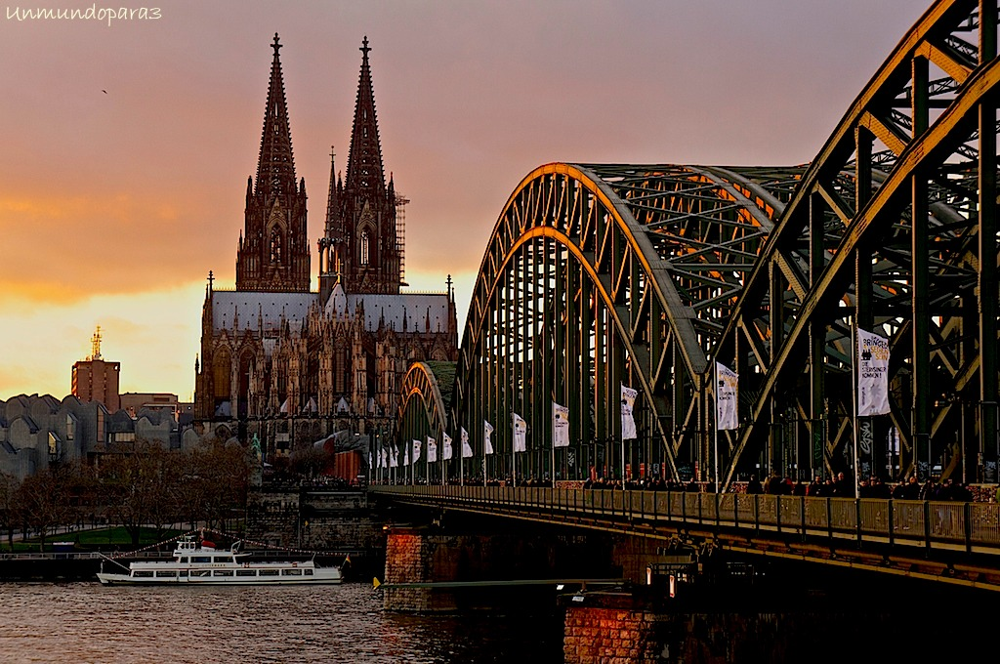

| Nombre | Imagen | Poblacion | Superficie | Descripción | Atracciones turisticas |
|---|---|---|---|---|---|
| Baviera |  | 13000000 | 70,550 km² | Baviera es un estado del sureste de Alemania, conocido por su capital Múnich, el Oktoberfest, paisajes alpinos y castillos como Neuschwanstein. |
Castillo de Neuschwanstein Los Alpes Bávaros Lago de Constanza |
| Berlín |  |
3700000 | 891.8 km² | Capital de Alemania, conocida por su rica historia, vida cultural vibrante y diversidad. |
El Muro de Berlín East Side Gallery Puerta de Brandeburgo |
| Renania del Norte-Westfalia |  | 17000000 | 34,084 km² | Estado más poblado de Alemania, conocido por su industria y diversidad cultural. |
Catedral de Colonia Centro histórico de Düsseldorf Museo Folkwang en Essen |